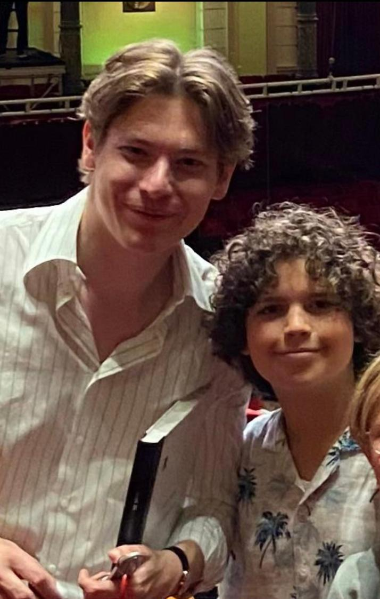
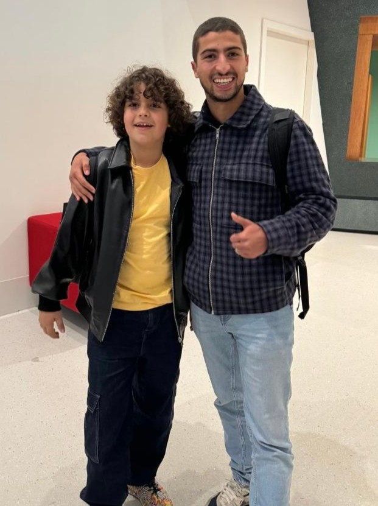

Op het podium & Achter de schermen On Stage & Behind the Scenes

Klaus Mäkelä (Mahler Festival)
Op het podium van de Grote Zaal met dirigent Klaus Mäkelä tijdens het Mahler 8-concert. On stage in the Main Hall with conductor Klaus Mäkelä during the Mahler 8 concert.

Tania Kross (OPERA2DAY)
Op het podium naast mezzosopraan Tania Kross tijdens La Révolution de Carmen. On stage alongside mezzo-soprano Tania Kross in La Révolution de Carmen.

Raphaël Pichon (Matthäus-Passion)
Achter de schermen met dirigent Raphaël Pichon na de Matthäus-Passion met Pygmalion. Backstage with conductor Raphaël Pichon following J.S. Bach's St Matthew Passion.

Floris Kortie (Podium Klassiek)
Op de set van het televisieprogramma Podium Klassiek samen met presentator Floris Kortie. On the set of Dutch classical music TV show Podium Klassiek with presenter Floris Kortie.

Nizar el Manouzi (Het Klokhuis)
Op de set van Het Klokhuis tijdens de opnames over het Nationaal Jongenskoor. On the set of Het Klokhuis during filming with the Netherlands National Boys Choir.

Klaas van Kruistum
Achter de schermen bij de Nationale Kinderherdenking als Eerbetoonkind. Backstage as Tribute Youth (Eerbetoonkind) at the National Children's Remembrance.

Hannah Mae
Backstage tijdens de Nationale Kinderherdenking in Madurodam met zangeres Hannah Mae. Backstage at the National Children's Remembrance in Madurodam with singer-songwriter Hannah Mae.

Karina Canellakis
Na de repetitie voor Gustav Mahlers Symfonie nr. 3 met het Radio Filharmonisch Orkest. Following rehearsals for Gustav Mahler's Symphony No. 3 with the Radio Philharmonic Orchestra.

Irene Verburg (Debuut)
Allereerste optreden in Het Concertgebouw met een Sound of Music-programma. First performance at The Royal Concertgebouw featuring a Sound of Music program.